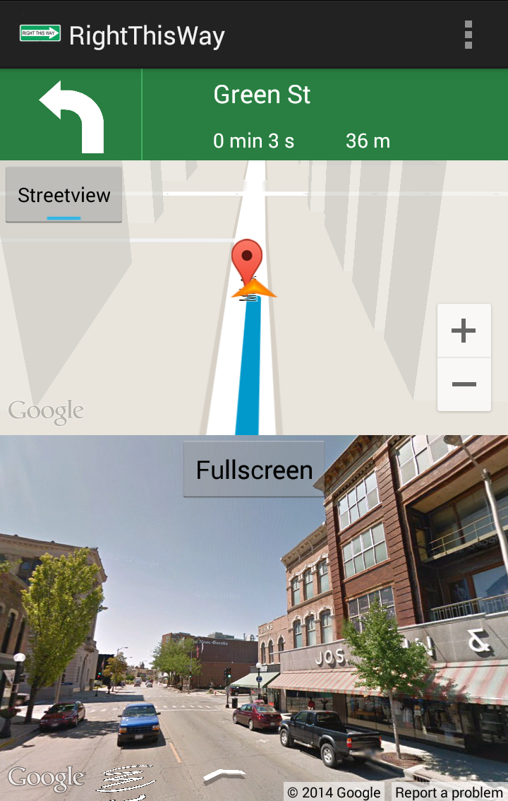

Choose your destination
- Start typing in the search bar and then click your destination in the dropdown menu.
- Click the 'Go' button next to the search bar or 'Go' on the keyboard.
Select turns for automatic street view
- Click the circle icons along the route to enable street views to pop up when nearing those turns.
- Press the 'Start' button to start navigating.

Navigate with interactive street views
Street views will split the screen when a previously selected turn is neared or when you click
the street view button in the upper left. You can also touch and drag within the street view to look around.
You can click on the Fullscreen button when the final destination is displayed to better explore the destination.
